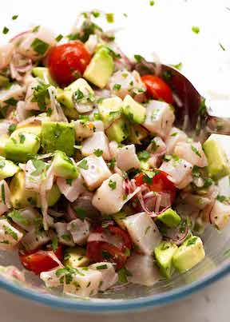

How to Make Ceviche

This is a traditional Mexican version of Ceviche except it's not overly sour!! Actually, limes are typically less sour in Central and South America, than they are in Australia, the US and most Western countries, so I balance out the sour with olive oil.
Avocado adds a deliciously creamy element, while the onion, tomato and coriander bring brightness to the dish. Serve sharing-style with corn chips, or in individual bowls for an elegant starter with crostini.
Ingredients
“COOKED” FISH:
- 400g / 14 oz kingfish, tuna, sea bass or other sashimi-grade fish suitable for raw eating (Note 1)
- 1/4 red onion , very finely sliced using mandolin (so it "flops")
- 2 tsp fresh jalapeño , finely chopped (or green chilli) – add more or less for spiciness
- 8 cherry tomatoes , halved (large ones quartered)
- 1/4 tsp black pepper
- 1/3 cup lime juice , fresh (or lemon juice)
ADD INS:
- 1/2 tsp salt , cooking / kosher (or 1/4 tsp table salt, Note 2)
- 1 avocado , ripe, cut into 1.25cm / 1/2″ cubes
- 1/4 cup coriander/cilantro leaves , roughly chopped (sub chives)
- 2 tbsp extra virgin olive oil (Note 3)
Instructions
- Cut fish: Cut fish into 1.25cm / 1/2" cubes.
- Toss in lime, leave 5 minutes: Place in a bowl with onion, jalapeño, tomato, pepper and lime juice. Gently toss, then set aside for 5 minutes, mixing gently once.
- Add avocado then serve! Sprinkle over salt, then add avocado, coriander and olive oil. Gently stir, then serve immediately with corn chips (see in post for other ideas).
- Ceviche will be good for 20 minutes or so, then fish will start to overcook and firm up. Do not leave overnight (for food safety reasons).
Recipe Notes:
- Raw fish – virtually any raw fish can be used for ceviche, as long as it’s “sashimi-grade” / “sushi grade” and therefore safe for eating raw. Fish simply labelled as “fresh” is not always sashimi-grade, it just means it hasn’t been frozen. Always ask your fish monger, or ensure the fish is clearly labelled. Or make this with freshly caught fish!
Here is a non exhaustive list of some common and traditional fish varieties that are excellent for ceviche (see same list in post for more commentary on each):
- Kingfish (pictured in post)- popular choice of fine dining establishments
- Sea bass – traditional in Peruvian
- Tuna and mackeral – popular in Mexico
- Prawns / shrimp – traditional in Ecuador, popular in Mexico
- Halibut or Patagonian tooth fish – Chile
- Salmon – not traditional but excellent for ceviche
- Bream – many species all around the world
- Swordfish – used in some Latin American countries.
- Trevally – not traditional in South America, but beautifully soft-textured and excellent for ceviche
- Cod and mahi mahi – Popular options in America.
Not recommended: snapper, grouper, some cods, flounder, which can be sometimes a bit tough eaten raw, are less suitable.
- Salt – table salt is finer than cooking/kosher salt so use less.
- Extra virgin olive oil – while not traditional, I find ceviche with just lime juice too sour for my palette, noting that limes in Mexico and South America tend to be less sour than those in Western countries.Common to use oil in fine dining establishments. It also adds a touch of luxury to this dish while still keeping it super fresh. It’s essential, in my books 🙂
- Leftovers – not recommended to keep leftovers for food hygiene purposes.
- Nutrition per serving, assuming 5 servings (Ceviche only).